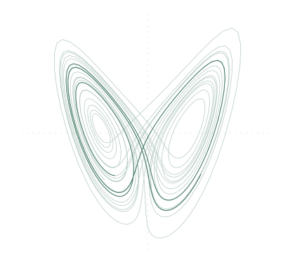

Computer science & mathematics
Adarsh
Bharathwaj.
Hi, I’m Adarsh. I’m a Computer Science and Mathematics student interested in algorithm theory and machine learning.
I also enjoy game development and exploring mathematical ideas through code.
Find me on GitHub
What interests me
Algorithms & theory
Understanding how algorithms work and the mathematics behind them.
Machine learning
Learning about models, methods, and the ideas that make them work.
Games & experiments
Building games and bringing mathematical ideas to life through code.
Around the web
For those I meet at the Conference on Language Models: thanks for stopping by.
- GitHub Code & projects
- Résumé PDF
- Cooperative Profiles Predict Multi-Agent LLM Team Performance in AI for Science Workflows PDF